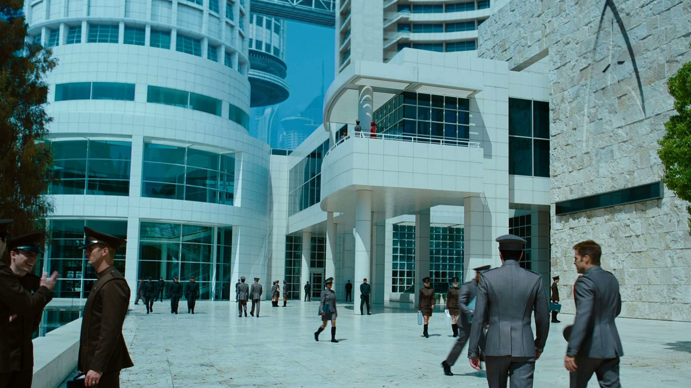
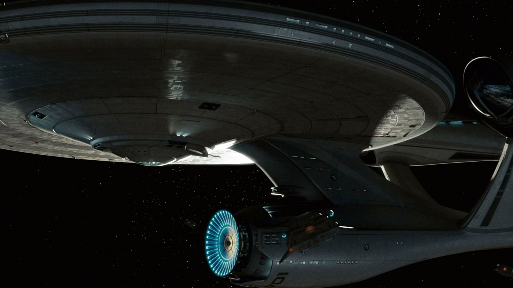
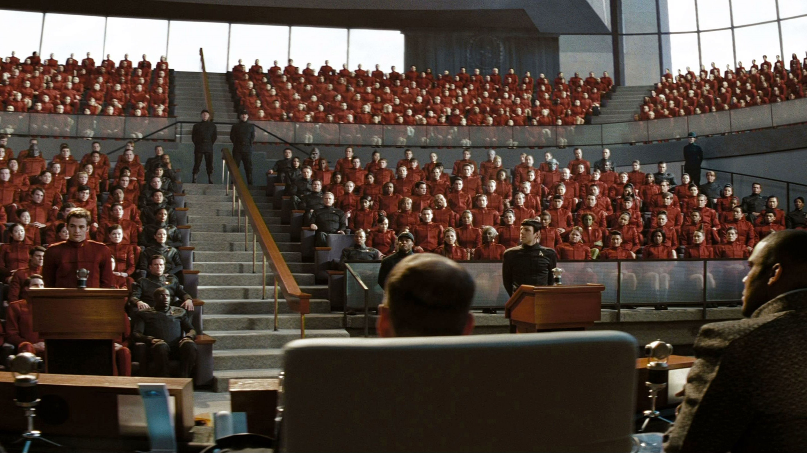
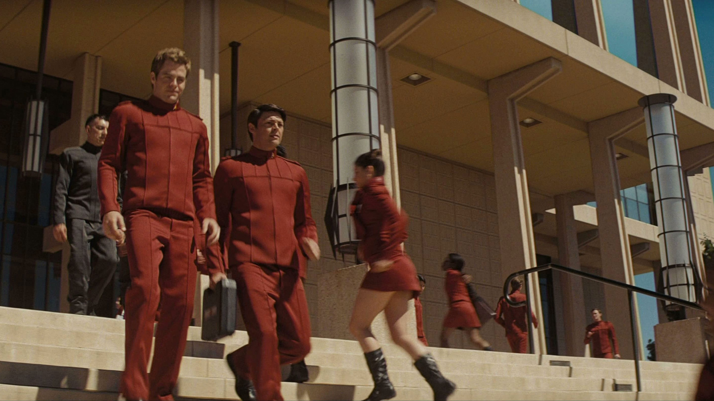
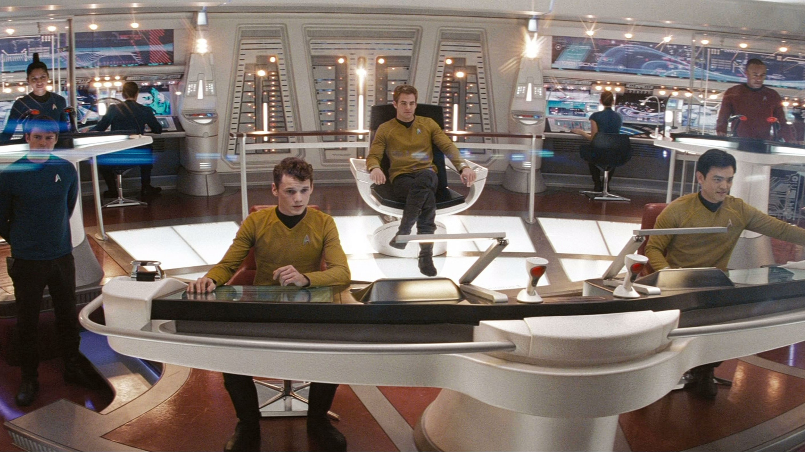
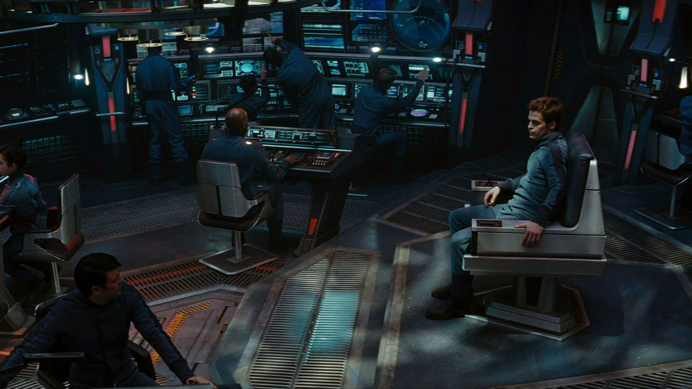

"The first duty of every Starfleet officer is to the truth. Whether it's scientific truth, or historical truth, or personal truth. It is the guiding principle upon which Starfleet is based."
-Captain Jean-Luc Picard
Starfleet Academy es el colegio de oficiales de la Flota. Está ubicada en San Francisco,
con campos en otros mundos. La Academia consiste en una escuela de cadetes, medicina, leyes y
comando.
También es responsable por el entrenamiento de oficiales tácticos y personal enlistado. Todos los
programas duran cuatro años, donde el último año se completa sirviendo en una nave o en otra
instalación de la Flota. La mayoría de los cadetes, en el tiempo que completan sus estudios,
tienen el cargo de alferez, pero algunos son asignados como tenientes.
Nuestra academia oficialmente fue establecida en 2161 como una institución con
la divisa Ex Astris, Scientia (de las estrellas, el conocimiento), para servir como preparación
y entrenamiento para el personal de la Flota Estelar.
Starfleet es la agencia diplomática, científica y defensiva de la Federación Unida
de Planetas.
Creada junto con nuestra academia con la firma de los Artículos de la Federación, su principal
objetivo es adquirir
conocimiento del universo, defender la integridad de la Federación y sus miembros y promover
la paz y cooperación interestelar.
El Comando de la Flota es la autoridad operativa de Starfleet.
Está ubicada físicamente en la ciudad de San Francisco, en el planeta Tierra, pero tiene
instalaciones en numerosas bases estelares. El Comando dirige la política de la Flota, pero
otorga a los oficiales comandantes en puestos ubicados en lugares lejanos la oportunidad de
interpretar e implementar esa política a su criterio. La política más importante de la Flota
es la Orden General 1 o Prime Directive. Las Ordenes Generales de la Flota, anteceden a
cualquier otra.
La Federación Unida de Planetas (comúnmente referida como Starfleet) es una organización
política constituida como una república federal interestelar, compuesta por gobiernos planetarios
que son agregados de forma que las normativas federales interplanetarias no afecten a las
regulaciones económicas, políticas y de defensa del propio planeta como unidad, pero que propone
un modelo de comercio, política y defensa extraplanetario. Dentro de esta organizacion, Starfleet
reune
especies de todos los rincones de la galaxia para que podamos todos servir bajo un mismo proposito.
Nuetsra prosperidad.





